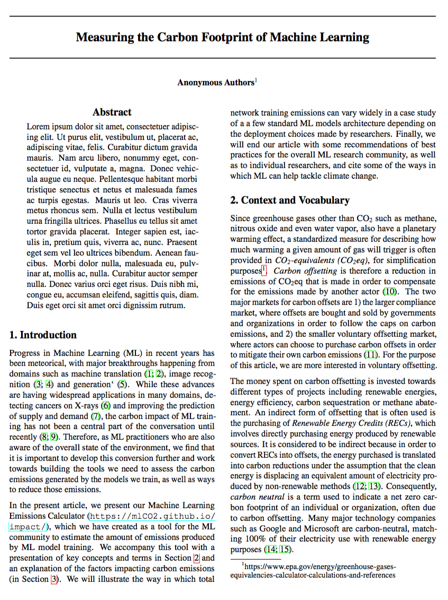
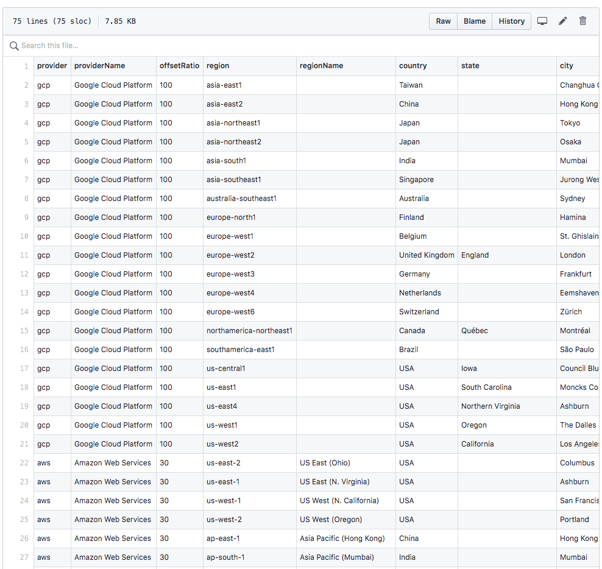

<!-- About Section -->
<section id="about" class="about-section bg-light">
    <div class="container">

        <div id="about-title" class="row">
            <div class="col-lg-8 mx-auto">
                <h2 class="text-white mb-4">About ML CO2 Impact</h2>
                <p class="text-white-80">Progress in Machine Learning (ML) in recent years has been meteorical, with
                    major breakthroughs happening fromdomains such as machine translation, image recognition and
                    generation.
                    While these advances are having widespread applications in many domains, detecting cancers on X-rays
                    and improving the prediction of supply and demand,
                    the carbon impact of ML training has not been a central part of the conversation untilrecently.</p>
                <p class="text-white-80">
                    Therefore, as ML practitioners who are also aware of the overall state of the environment, we find
                    thatit is important to develop this conversion further and work towards building the tools we need
                    to
                    assess the carbon emissions generated by the models we train, as well as ways to reduce those
                    emissions.</p>
                </p>

                <div class="about-content">
                    <div class="row" id="about-content-row">
                        <div class="col-md-6 col-sm-12 about-content-text">
                            <h4 class="text-white mb-4" style="width:100%">Read our paper</h4>
                            <p class="text-white mb-4">We have submitted this short 3 pages paper to NeurIPS 2019's
                                <a target="_blank" rel="noopener noreferrer"
                                    href="https://www.climatechange.ai/NeurIPS2019_workshop.html">Climate Change AI
                                    workshop</a>.
                                Work under review.</p>
                        </div>
                        <div class="col-md-6 col-sm-12 about-content-img">
                            <a target="_blank" rel="noopener noreferrer" href="../data/paper-.pdf">
                                
                            </a>
                        </div>
                    </div>
                </div>


                <div class="about-content">
                    <div class="row" id="about-content-row">
                        <div class="col-md-6 col-sm-12 about-content-text">
                            <h4 class="text-white mb-4" style="width:100%">Audit the Data</h4>
                            <p class="text-white mb-4">It's hosted on Github to allow for external contributions</p>
                        </div>
                        <div class="col-md-6 col-sm-12 about-content-img">
                            <a target="_blank" rel="noopener noreferrer" title="Go see the data on Github"
                                href="https://github.com/mlco2/impact/tree/master/data">
                                
                            </a>
                        </div>
                    </div>
                </div>


            </div>
        </div>

    </div>
</section>